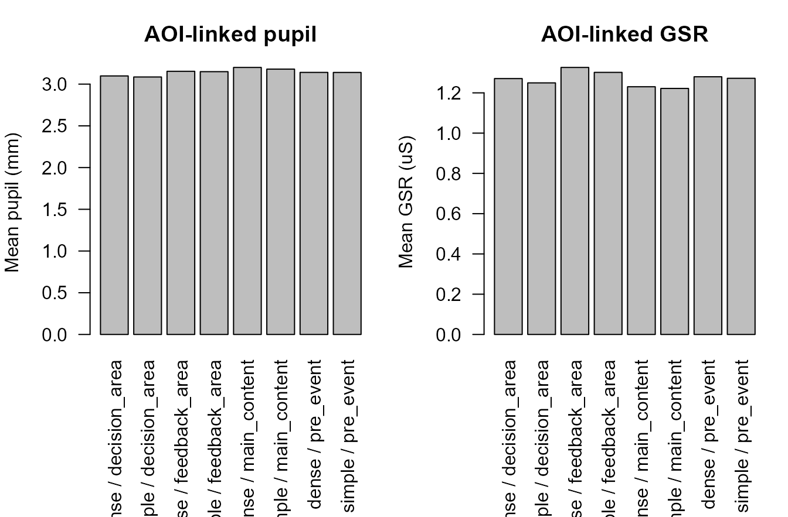
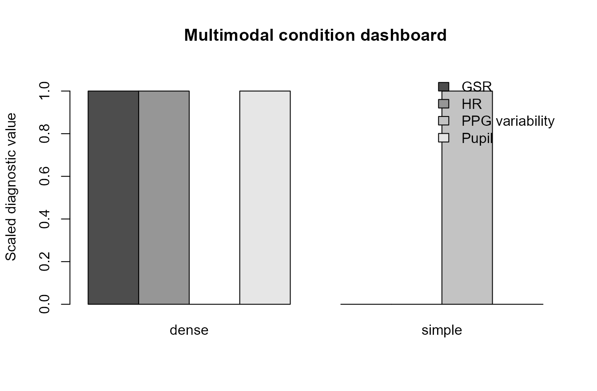
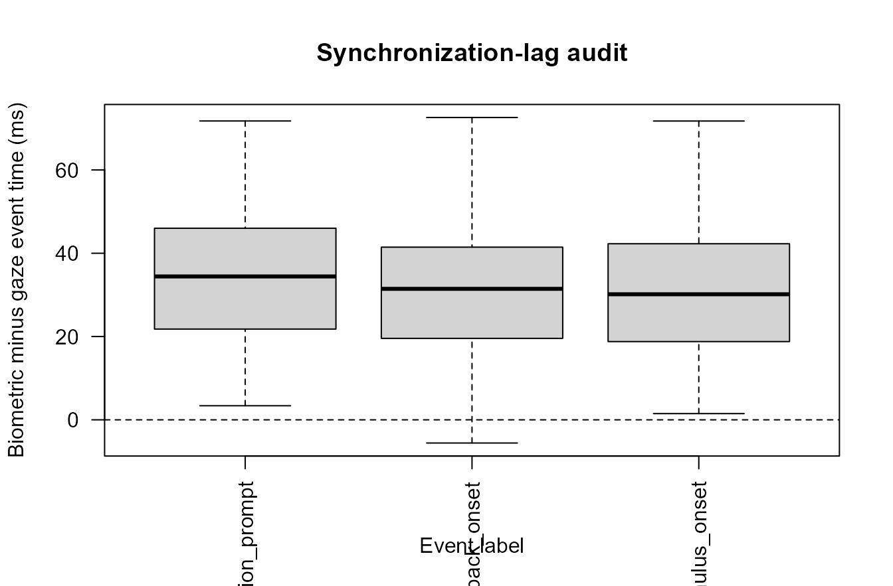
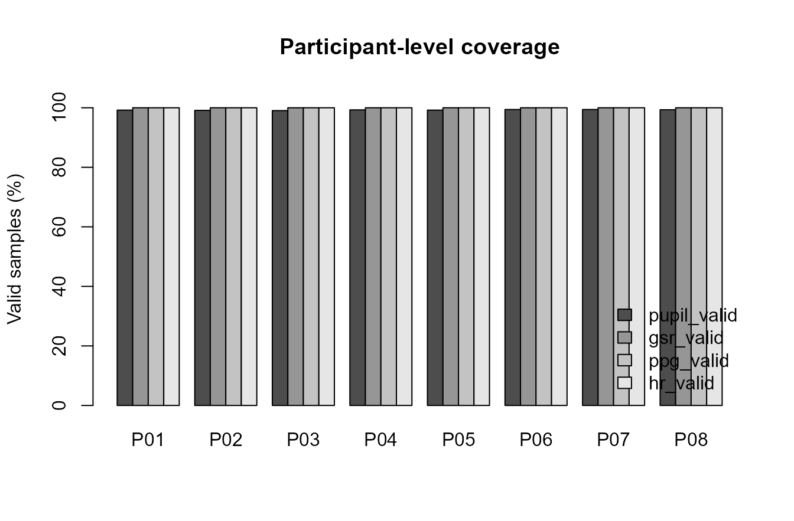
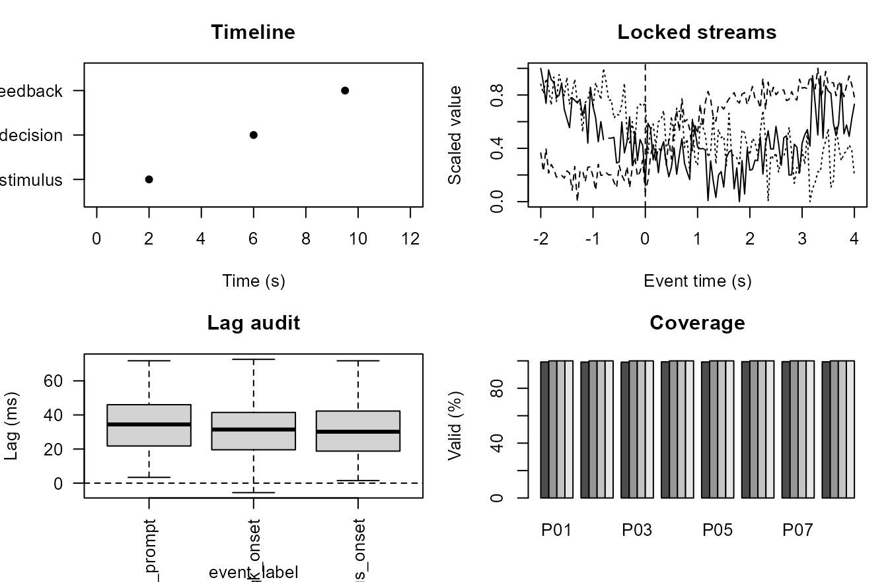

Multimodal event dashboard
Source:vignettes/articles/multimodal-event-dashboard.Rmd
multimodal-event-dashboard.RmdPurpose
This article demonstrates a plot-rich multimodal event-dashboard
workflow for gpbiometrics projects.
The workflow is diagnostic and synchronization-oriented. The figures show event timelines, gaze-biometric alignment checks, event-locked pupil/GSR/PPG/HR windows, AOI-linked biometric summaries, condition-level multimodal displays, synchronization-lag audits, participant-level coverage, and compact dashboard-style reporting. They should not be interpreted as direct evidence of attention, emotion, stress, workload, health status, clinical state, diagnosis, autonomic state, or psychological response.
Synthetic multimodal stream
The example uses synthetic data so that the article is reproducible and does not depend on private recordings.
alpha_response <- function(time_s, onset_s, amplitude, rise = 0.8, decay = 2.6) {
x <- pmax(0, time_s - onset_s)
y <- amplitude * (exp(-x / decay) - exp(-x / rise))
y[x <= 0] <- 0
y
}
participants <- sprintf("P%02d", 1:8)
trials <- seq_len(10)
sampling_rate_hz <- 20
time_s <- seq(0, 12, by = 1 / sampling_rate_hz)
trial_grid <- expand.grid(
participant_id = participants,
trial_id = trials,
KEEP.OUT.ATTRS = FALSE,
stringsAsFactors = FALSE
)
events_template <- data.frame(
event_label = c("stimulus_onset", "decision_prompt", "feedback_onset"),
event_time_s = c(2.0, 6.0, 9.5),
stringsAsFactors = FALSE
)
make_trial <- function(participant_id, trial_id) {
condition <- ifelse(trial_id %% 2 == 0, "dense", "simple")
participant_shift <- match(participant_id, participants) / 80
trial_shift <- trial_id / 120
pupil <- 3.05 + participant_shift + 0.06 * sin(2 * pi * time_s / 9) +
alpha_response(time_s, 2.0, ifelse(condition == "dense", 0.18, 0.12), 0.9, 3.0) +
rnorm(length(time_s), 0, 0.025)
gsr <- 1.20 + trial_shift + 0.04 * cos(2 * pi * time_s / 10) +
alpha_response(time_s, 6.0, ifelse(condition == "dense", 0.14, 0.09), 1.0, 3.8) +
rnorm(length(time_s), 0, 0.015)
ppg <- 0.85 + 0.25 * sin(2 * pi * 1.2 * time_s) + 0.04 * sin(2 * pi * 0.25 * time_s) +
rnorm(length(time_s), 0, 0.035)
hr <- 72 + ifelse(condition == "dense", 2.0, 0.8) + 1.8 * sin(2 * pi * time_s / 12) +
rnorm(length(time_s), 0, 0.8)
aoi <- ifelse(time_s < 2.0, "pre_event",
ifelse(time_s < 5.0, "main_content",
ifelse(time_s < 8.5, "decision_area", "feedback_area")))
missing <- runif(length(time_s)) < ifelse(condition == "dense", 0.010, 0.006)
pupil[missing] <- NA_real_
data.frame(
participant_id = participant_id,
trial_id = trial_id,
condition = condition,
sample_id = seq_along(time_s),
time_s = time_s,
pupil_mm = pupil,
gsr_us = gsr,
ppg = ppg,
hr_bpm = hr,
aoi = aoi,
stringsAsFactors = FALSE
)
}
multimodal <- do.call(
rbind,
Map(make_trial, trial_grid$participant_id, trial_grid$trial_id)
)
events <- do.call(
rbind,
lapply(seq_len(nrow(trial_grid)), function(i) {
participant_id <- trial_grid$participant_id[i]
trial_id <- trial_grid$trial_id[i]
condition <- ifelse(trial_id %% 2 == 0, "dense", "simple")
drift_ms <- 20 + 3 * match(participant_id, participants) + rnorm(1, 0, 4)
data.frame(
participant_id = participant_id,
trial_id = trial_id,
condition = condition,
event_label = events_template$event_label,
event_time_s = events_template$event_time_s,
biometric_event_time_s = events_template$event_time_s + drift_ms / 1000,
gaze_event_time_s = events_template$event_time_s + rnorm(3, 0, 0.012),
drift_ms = drift_ms,
stringsAsFactors = FALSE
)
})
)
head(multimodal)
#> participant_id trial_id condition sample_id time_s pupil_mm gsr_us
#> P01.1 P01 1 simple 1 0.00 3.040818 1.251040
#> P01.2 P01 1 simple 2 0.05 3.049601 1.261870
#> P01.3 P01 1 simple 3 0.10 3.064938 1.251633
#> P01.4 P01 1 simple 4 0.15 3.062228 1.256398
#> P01.5 P01 1 simple 5 0.20 3.044386 1.233673
#> P01.6 P01 1 simple 6 0.25 3.044350 1.221529
#> ppg hr_bpm aoi
#> P01.1 0.8448973 71.72387 pre_event
#> P01.2 0.9980932 73.09931 pre_event
#> P01.3 1.0574560 73.53745 pre_event
#> P01.4 1.0904896 73.03611 pre_event
#> P01.5 1.1238814 72.97254 pre_event
#> P01.6 1.1130499 73.19125 pre_event
head(events)
#> participant_id trial_id condition event_label event_time_s
#> 1 P01 1 simple stimulus_onset 2.0
#> 2 P01 1 simple decision_prompt 6.0
#> 3 P01 1 simple feedback_onset 9.5
#> 4 P02 1 simple stimulus_onset 2.0
#> 5 P02 1 simple decision_prompt 6.0
#> 6 P02 1 simple feedback_onset 9.5
#> biometric_event_time_s gaze_event_time_s drift_ms
#> 1 2.023983 1.999484 23.98256
#> 2 6.023983 5.996624 23.98256
#> 3 9.523983 9.510977 23.98256
#> 4 2.021578 2.000989 21.57786
#> 5 6.021578 5.996033 21.57786
#> 6 9.521578 9.499211 21.57786Event timeline
An event timeline documents the expected ordering of markers before alignment and event-window extraction.
one_trial <- multimodal[multimodal$participant_id == "P01" & multimodal$trial_id == 2, ]
one_events <- events[events$participant_id == "P01" & events$trial_id == 2, ]
plot(
range(one_trial$time_s),
c(0.5, 3.5),
type = "n",
yaxt = "n",
xlab = "Time (s)",
ylab = "",
main = "Event timeline"
)
axis(2, at = 1:3, labels = c("stimulus", "decision", "feedback"), las = 1)
segments(0, 1, 12, 1)
segments(0, 2, 12, 2)
segments(0, 3, 12, 3)
points(one_events$event_time_s, 1:3, pch = 16)
text(one_events$event_time_s, 1:3, labels = one_events$event_label, pos = 3)Synthetic event timeline for one participant-trial segment.
Gaze-biometric alignment check
Alignment plots compare nominal, gaze-recorded, and biometric-recorded event times. These are synchronization checks, not substantive effects.
plot(
one_events$gaze_event_time_s,
one_events$biometric_event_time_s,
pch = 16,
xlab = "Gaze event time (s)",
ylab = "Biometric event time (s)",
main = "Gaze-biometric alignment"
)
abline(0, 1, lty = 2)
text(one_events$gaze_event_time_s, one_events$biometric_event_time_s, labels = one_events$event_label, pos = 3)Synthetic gaze-biometric event-alignment check.
Event-locked multimodal windows
Event-locked windows show how streams are extracted around a shared marker. The plotted values are synthetic signal summaries.
window_event <- one_events[one_events$event_label == "decision_prompt", ]
locked <- one_trial[one_trial$time_s >= window_event$event_time_s - 2 & one_trial$time_s <= window_event$event_time_s + 4, ]
locked$event_time <- locked$time_s - window_event$event_time_s
scale01 <- function(x) {
rng <- range(x, na.rm = TRUE)
if (diff(rng) == 0) return(rep(0.5, length(x)))
(x - rng[1]) / diff(rng)
}
op <- par(mfrow = c(4, 1), mar = c(3.2, 4, 2, 1))
plot(locked$event_time, locked$pupil_mm, type = "l", xlab = "Event time (s)", ylab = "Pupil", main = "Pupil window"); abline(v = 0, lty = 2)
plot(locked$event_time, locked$gsr_us, type = "l", xlab = "Event time (s)", ylab = "GSR", main = "GSR window"); abline(v = 0, lty = 2)
plot(locked$event_time, locked$ppg, type = "l", xlab = "Event time (s)", ylab = "PPG", main = "PPG window"); abline(v = 0, lty = 2)
plot(locked$event_time, locked$hr_bpm, type = "l", xlab = "Event time (s)", ylab = "HR", main = "HR window"); abline(v = 0, lty = 2)Synthetic event-locked pupil, GSR, PPG, and HR windows.
par(op)AOI-linked biometric summaries
AOI-linked summaries are useful for checking whether biometric windows can be joined to screen regions or task phases.
aoi_summary <- aggregate(
cbind(pupil_mm, gsr_us, hr_bpm) ~ condition + aoi,
data = multimodal,
FUN = function(x) mean(x, na.rm = TRUE)
)
aoi_summary$display_label <- paste(aoi_summary$condition, aoi_summary$aoi, sep = " / ")
op <- par(mfrow = c(1, 2), mar = c(8, 4, 3, 1))
barplot(aoi_summary$pupil_mm, names.arg = aoi_summary$display_label, las = 2, ylab = "Mean pupil (mm)", main = "AOI-linked pupil")
barplot(aoi_summary$gsr_us, names.arg = aoi_summary$display_label, las = 2, ylab = "Mean GSR (uS)", main = "AOI-linked GSR")
Synthetic AOI-linked biometric summaries.
par(op)Multimodal condition dashboard
A condition-level dashboard can summarize multiple streams after event alignment and AOI joining.
condition_summary <- aggregate(
cbind(pupil_mm, gsr_us, hr_bpm) ~ condition,
data = multimodal,
FUN = function(x) mean(x, na.rm = TRUE)
)
condition_summary$ppg_sd <- aggregate(ppg ~ condition, data = multimodal, FUN = sd)$ppg
metric_values <- rbind(
data.frame(condition = condition_summary$condition, metric = "Pupil", value = scale01(condition_summary$pupil_mm)),
data.frame(condition = condition_summary$condition, metric = "GSR", value = scale01(condition_summary$gsr_us)),
data.frame(condition = condition_summary$condition, metric = "HR", value = scale01(condition_summary$hr_bpm)),
data.frame(condition = condition_summary$condition, metric = "PPG variability", value = scale01(condition_summary$ppg_sd))
)
metric_matrix <- xtabs(value ~ metric + condition, metric_values)
barplot(
metric_matrix,
beside = TRUE,
ylim = c(0, 1.1),
ylab = "Scaled diagnostic value",
main = "Multimodal condition dashboard",
legend.text = TRUE,
args.legend = list(x = "topright", bty = "n")
)
Synthetic multimodal condition-level dashboard.
Synchronization-lag visual audit
Lag plots help identify systematic offsets between event streams before model-ready window construction.
events$lag_ms <- (events$biometric_event_time_s - events$gaze_event_time_s) * 1000
boxplot(
lag_ms ~ event_label,
data = events,
las = 2,
ylab = "Biometric minus gaze event time (ms)",
xlab = "Event label",
main = "Synchronization-lag audit"
)
abline(h = 0, lty = 2)
Synthetic synchronization-lag audit.
Participant-level coverage
Coverage plots show whether missingness or unusable windows are concentrated in specific participants.
coverage <- aggregate(
cbind(
pupil_valid = !is.na(multimodal$pupil_mm),
gsr_valid = !is.na(multimodal$gsr_us),
ppg_valid = !is.na(multimodal$ppg),
hr_valid = !is.na(multimodal$hr_bpm)
),
by = list(participant_id = multimodal$participant_id),
FUN = mean
)
coverage_matrix <- as.matrix(coverage[, -1]) * 100
rownames(coverage_matrix) <- coverage$participant_id
barplot(
t(coverage_matrix),
beside = TRUE,
ylim = c(0, 105),
ylab = "Valid samples (%)",
main = "Participant-level coverage",
legend.text = colnames(coverage_matrix),
args.legend = list(x = "bottomright", bty = "n")
)
Synthetic participant-level multimodal coverage.
Compact multimodal event dashboard
A compact dashboard can combine timeline, event-locked traces, lag checks, and coverage review into a single report-oriented display.
op <- par(mfrow = c(2, 2), mar = c(4, 4, 3, 1))
plot(range(one_trial$time_s), c(0.5, 3.5), type = "n", yaxt = "n", xlab = "Time (s)", ylab = "", main = "Timeline")
axis(2, at = 1:3, labels = c("stimulus", "decision", "feedback"), las = 1)
points(one_events$event_time_s, 1:3, pch = 16)
plot(locked$event_time, scale01(locked$pupil_mm), type = "l", ylim = c(0, 1), xlab = "Event time (s)", ylab = "Scaled value", main = "Locked streams")
lines(locked$event_time, scale01(locked$gsr_us), lty = 2)
lines(locked$event_time, scale01(locked$hr_bpm), lty = 3)
abline(v = 0, lty = 2)
boxplot(lag_ms ~ event_label, data = events, las = 2, ylab = "Lag (ms)", main = "Lag audit")
abline(h = 0, lty = 2)
barplot(t(coverage_matrix), beside = TRUE, ylim = c(0, 105), ylab = "Valid (%)", main = "Coverage")
Compact synthetic multimodal event dashboard.
par(op)Relation to gpbiometrics helpers
The same reporting pattern can be paired with package-level helpers when project data use the expected column contracts.
| task | representative_helpers |
|---|---|
| Event extraction | extract_gazepoint_ttl_events(); import_gazepoint_event_log() |
| Event-to-sample matching | match_gazepoint_events_to_biometrics(); align_gazepoint_biometrics_to_ttl() |
| Gaze-biometric synchronization | sync_gazepoint_biometrics_with_gaze(); diagnose_gazepoint_sync_drift() |
| Event-locked windows | summarise_gazepoint_multimodal_windows(); summarize_gazepoint_eventlocked_multimodal() |
| AOI-linked summaries | summarise_gazepoint_aoi_biometrics(); plot_gazepoint_aoi_biometrics() |
| Model-ready tables | prepare_gazepoint_multimodal_model_data(); prepare_gazepoint_aoi_biometrics_model_data() |
| Report outputs | create_gazepoint_qc_supplement(); create_gazepoint_biometrics_report_tables() |
library(gpbiometrics)
events <- extract_gazepoint_ttl_events(
biometric_data,
marker_col = "TTL",
time_col = "TIME_MS"
)
aligned <- align_gazepoint_biometrics_to_ttl(
biometric_data,
events = events,
time_col = "TIME_MS",
participant_col = "participant_id",
trial_col = "trial_id"
)
sync <- sync_gazepoint_biometrics_with_gaze(
biometric_data = biometric_data,
gaze_data = gaze_data,
event_data = events
)
windows <- summarise_gazepoint_multimodal_windows(
aligned,
event_col = "event_label",
time_col = "event_time_ms",
participant_col = "participant_id",
trial_col = "trial_id"
)
aoi_summary <- summarise_gazepoint_aoi_biometrics(
aligned,
aoi_col = "AOI",
participant_col = "participant_id",
trial_col = "trial_id"
)
plot_gazepoint_multimodal_timeline(windows)
plot_gazepoint_aoi_biometrics(aoi_summary)Reporting recommendation
For manuscripts, technical supplements, and reviewer-facing reports, describe these figures as event-alignment, synchronization, AOI-linking, multimodal-window, quality-control, and reproducibility diagnostics. Avoid stronger attentional, affective, workload-related, stress-related, clinical, health-related, autonomic, or psychological interpretation unless supported by validation, controls, and modelling evidence.